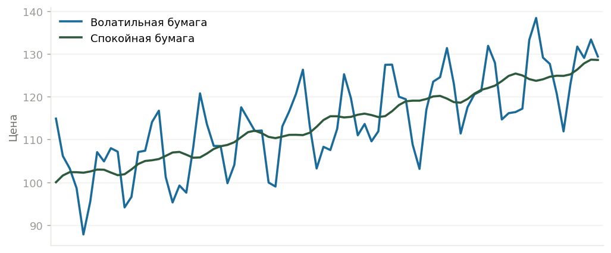

Мы часто слышим о рисках в инвестировании и даже примерно представляем, что такое риск. Но для большинства частных инвесторов риск — это абстракция, которой пугают новичков. А ведь риск — вполне измеримая величина, и профессионалы считают его постоянно.
Рыночный риск — это риск потери стоимости актива в вашем портфеле. Купили акции Сбербанка по 250 рублей — и вместе с акцией приобрели риск, что цена упадёт, скажем, до 200, и позиция станет убыточной. Нельзя отделить доходность от риска: это аверс и реверс одной монеты. Или цена вырастет и вы получите доход, или упадёт — и вам достанется реализовавшийся риск и убыток.
Характеристика риска любого актива — изменчивость его стоимости, или волатильность. Представьте две акции: одну «скучную», как Макдональдс, и одну «бешеную», как Тесла. Одна колеблется слабо, другая ходит ходуном.

Чем выше волатильность, тем выше потенциальный риск: масштаб падения в плохом сценарии предсказать очень сложно. Но справедливости ради — волатильные акции не только сильнее падают, но и растут лучше «скучных». Сравнивая волатильность двух активов, мы можем сказать, какой из них более рискованный.
Иногда нужно сравнить волатильность не двух бумаг, а конкретной акции и фондового индекса — чтобы понять, эта акция рискованнее рынка или спокойнее. Фондовый индекс — это «корзина» акций, объединённых по какому-то признаку (в России — индекс Мосбиржи или РТС, в США — S&P 500, Nasdaq, Dow Jones). Для такого сравнения используют коэффициент бета.
Бета — мера рыночного риска: она показывает изменчивость доходности бумаги (или портфеля) по отношению к индексу. Считается так:
Из формулы видно: бета завязана на корреляцию с рынком. Поэтому если связи с рынком почти нет (низкий R²), бета становится ненадёжной — подробнее про R².
Бета показывает, насколько актив более или менее рискован по сравнению с рынком в целом. У самого индекса бета всегда равна 1. Поэтому если бета акции больше 1 — актив рискованнее рынка, если меньше 1 — спокойнее. У разных бумаг бета разная: у одних заметно больше единицы, у других — меньше.
Бету считают не только для отдельной бумаги, но и для портфеля целиком — чтобы сравнить его риск с индексом и подстроить под свою стратегию. Считается она просто, если известна бета каждой бумаги: это взвешенная сумма бет по долям.
Бету каждой бумаги и всего портфеля теперь считает оптимизатор на investtools.pro — без формул и вычислений вручную. Там же видно и R² — какая доля риска бумаги идёт от рынка, а сколько её собственного.